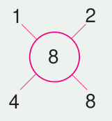

Activity 4
Identifying prime numbers by using factors
Steps
1.
List all counting numbers from 1 to 15 and encircle them:
2.
Write factors of each number and represent them using branches. For example;

3.
List all numbers which have only two branches, that is, numbers with only two factors.
The numbers obtained in step 3 are called prime numbers.
Example 1
Write 36 as a product of prime factors.
Solution